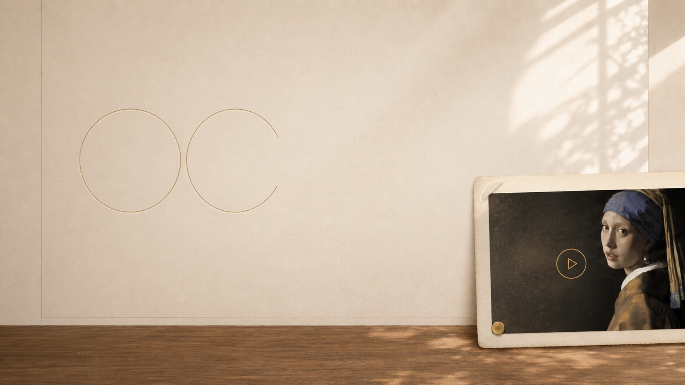

让一条好视频， 长成你的 OC。
从视频到世界观、角色、故事与图像
The poetics of sight
诺文
“美即是真，真即是美。这就是你在世间所知的一切，也是你需要知道的一切。”John Keats, Ode on a Grecian Urn
06 works/巨构艺术·叙事续写·原创世界
下一章

从视频到世界观、角色、故事与图像
The poetics of sight
“美即是真，真即是美。这就是你在世间所知的一切，也是你需要知道的一切。”John Keats, Ode on a Grecian Urn
06 works/巨构艺术·叙事续写·原创世界
下一章